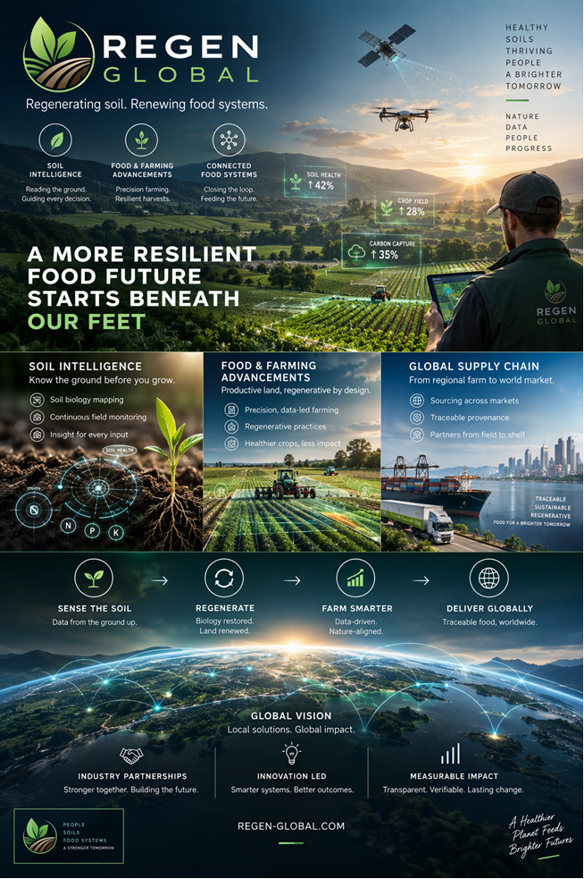

A more resilient food future starts beneath our feet.
We connect soil intelligence, regenerative farming and global food systems to build healthier land and stronger supply chains.
Soil intelligence
Know the ground before you grow. Insights to guide better decisions.
Food & farming advancements
Precision, data-led farming and regenerative practices for resilient harvests.
Global supply chain
Connecting regional farms to world markets through traceable supply chains.